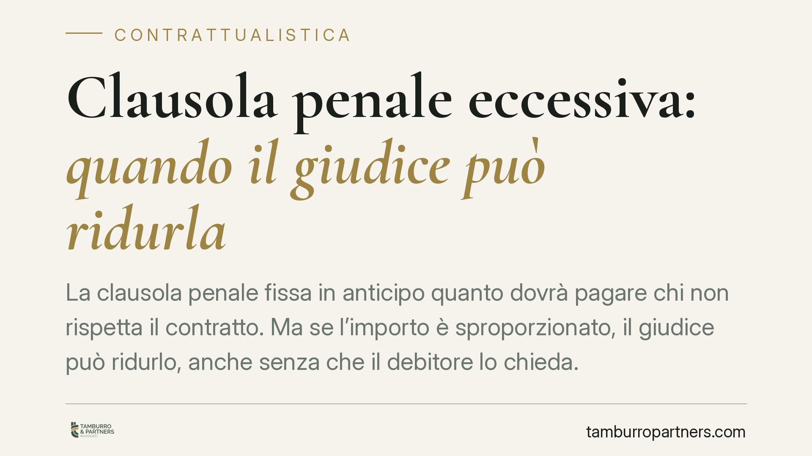

Clausola penale eccessiva: quando il giudice può ridurla
La clausola penale fissa in anticipo quanto dovrà pagare chi non rispetta il contratto. Ma se l'importo è sproporzionato, il giudice può ridurlo, anche senza che il debitore lo chieda. Una recente pronuncia di merito torna sul tema, confermando un orientamento consolidato: conoscere i limiti di questo potere è decisivo per chi redige contratti.

Il caso e il contesto
La clausola penale è la somma che le parti stabiliscono in anticipo a carico di chi non adempie, o adempie in ritardo. Serve a liquidare preventivamente il danno ed evitare controversie sulla sua quantificazione.
Una recente pronuncia di merito è tornata sul potere del giudice di ridurre la penale quando l'importo appare sproporzionato. La questione è ricorrente nella pratica: molti contratti prevedono penali elevate, pensate più come deterrente che come stima realistica del pregiudizio.
*Nota: il riferimento numerico alla sentenza citata dalla fonte non è stato verificabile alla data di redazione e viene pertanto omesso in attesa di riscontro.*
Inquadramento normativo
La norma di riferimento è l'art. 1384 c.c., secondo cui la penale può essere diminuita equamente dal giudice in due ipotesi distinte:
- Esecuzione parziale dell'obbligazione principale. Se il debitore ha adempiuto in parte, la penale prevista per l'inadempimento totale va proporzionata a quanto effettivamente non eseguito.
- Manifesta eccessività dell'importo, avuto riguardo all'interesse che il creditore aveva all'adempimento. Qui non rileva un adempimento parziale, ma la sproporzione intrinseca tra la penale e l'interesse del creditore.
Sono due presupposti autonomi: il secondo può operare anche in assenza del primo.
Un punto merita precisione. L'interesse del creditore è il parametro di valutazione, ma il momento rilevante per apprezzarlo è oggetto di dibattito. Una parte della giurisprudenza guarda alla situazione esistente al momento della conclusione del contratto; altre pronunce valorizzano l'interesse così come si presenta al momento dell'inadempimento. Non si tratta quindi di un dato pacifico, e la soluzione concreta dipende dalle circostanze.
Fermo resta che il giudice valuta la congruità della penale rispetto all'interesse del creditore, e non si limita a confrontarla con il danno effettivamente subìto: la penale conserva la sua funzione proprio perché prescinde dalla prova del danno concreto.
La riducibilità d'ufficio
Un profilo centrale riguarda la possibilità per il giudice di ridurre la penale anche senza una specifica domanda del debitore.
Sul punto sono intervenute le Sezioni Unite della Cassazione con la sentenza n. 18128/2005, che hanno riconosciuto il potere di riduzione d'ufficio della penale manifestamente eccessiva. La ratio è la tutela di un interesse che trascende quello delle sole parti: l'equilibrio del contratto e il controllo sull'autonomia privata.
Ne discende che il potere riduttivo ha natura inderogabile. Le parti non possono escluderlo preventivamente con una clausola che rinunci alla riduzione: una pattuizione di questo tipo sarebbe inefficace.
Implicazioni pratiche
Per chi redige o firma contratti, le conseguenze sono concrete.
Chi inserisce una penale non può confidare che l'importo pattuito sia intangibile. Una penale sproporzionata rischia di essere ridimensionata in giudizio, vanificando in parte la sua funzione deterrente.
Chi subisce una richiesta di pagamento basata su una penale elevata ha uno strumento difensivo: può chiedere al giudice la riduzione per manifesta eccessività, e il giudice può provvedere anche d'ufficio.
La misura della penale, dunque, va calibrata fin dalla redazione. Un importo credibile, ancorato a una stima ragionevole del pregiudizio, ha più probabilità di resistere al vaglio giudiziale rispetto a una cifra punitiva.
Cosa fare in concreto
- Calibrate la penale rapportandola a una stima realistica del danno prevedibile, non a un intento meramente sanzionatorio.
- Documentate la fase precontrattuale: verbali, scambi di corrispondenza e trattative aiutano a ricostruire l'interesse del creditore e a giustificare l'importo pattuito.
- Evitate clausole di rinuncia alla riduzione: sono inefficaci e indeboliscono la posizione negoziale.
- Se subite una richiesta fondata su una penale sproporzionata, valutate tempestivamente l'eccezione di riduzione ex art. 1384 c.c.
- In caso di adempimento parziale, verificate la proporzione tra quanto eseguito e l'importo richiesto.
La penale è uno strumento efficace solo se costruito con misura.
---
Contributo informativo a cura di Tamburro & Partners Avvocati - Avv. Giuseppe Tamburro. Non costituisce parere legale.
Ogni contratto ha il suo equilibrio.
Se vuoi una revisione delle clausole o una redazione su misura, scrivi allo studio. Ti rispondiamo entro un giorno lavorativo.